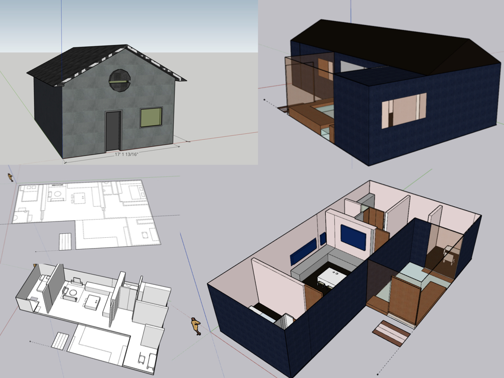
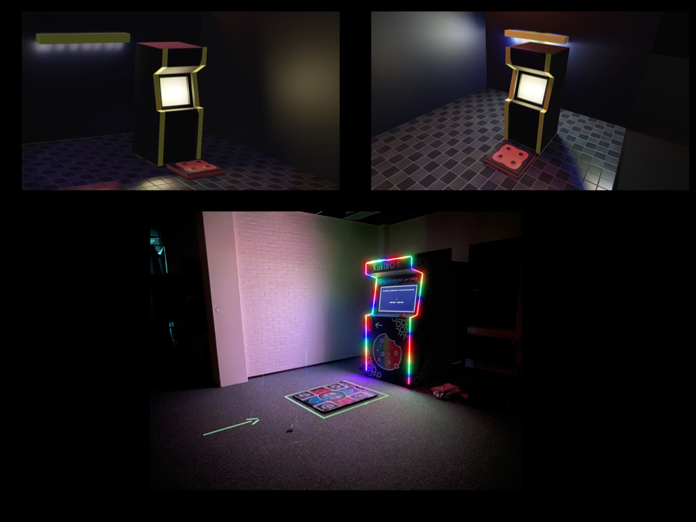
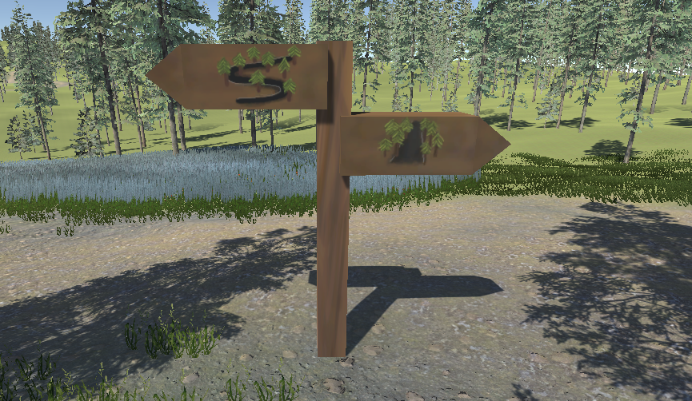
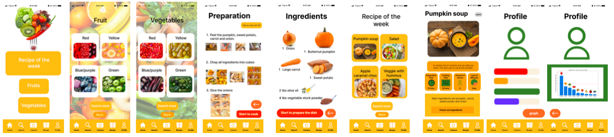
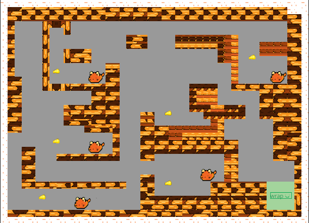
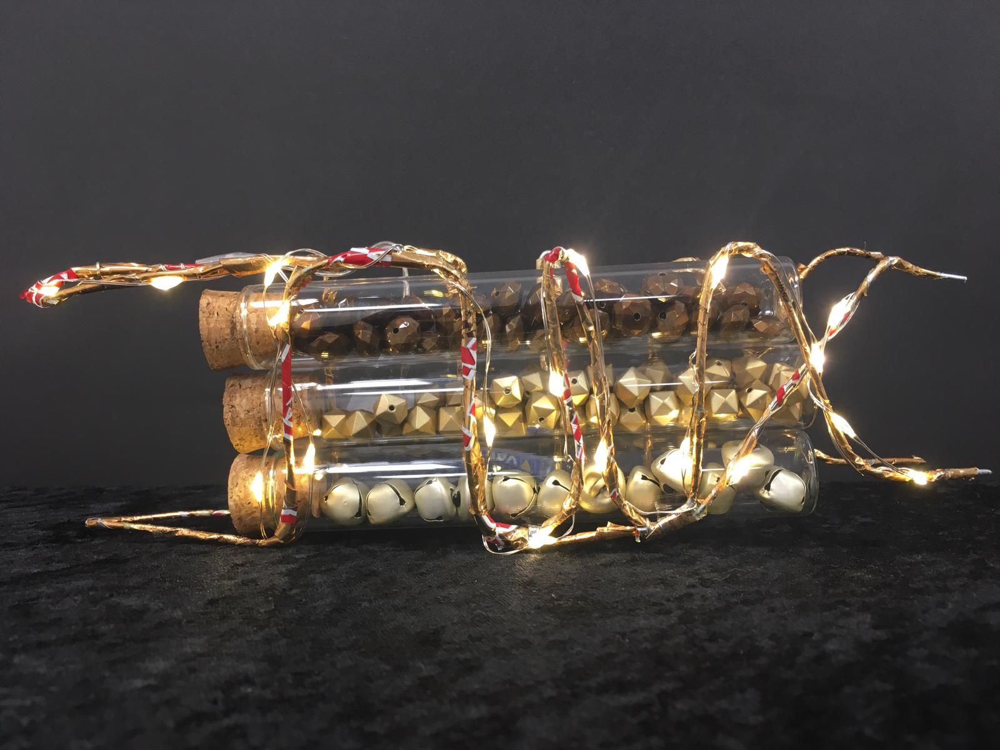

Portfolio
Skills
Design
Game
Prototype
Programming
Others
3D Design
I specialize in creating immersive 3D models, environments, and interactive elements for diverse applications including game design, product prototyping, and architectural visualization. My primary expertise lies in Blender, where I leverage its powerful features to craft detailed, high-quality visuals that bring projects to life. Whether it's designing intricate game assets, realistic product prototypes, or detailed architectural environments, Blender enables me to deliver precise and compelling results.
In addition to Blender, I have hands-on experience with SketchUp and Maya, which I utilize for specialized tasks. SketchUp allows me to quickly and efficiently model architectural elements and prototypes, while Maya is used for advanced modeling and animation tasks, providing flexibility for complex projects. My experience with Fusion 360 further complements my skill set by expanding my capabilities into product design. This tool has been instrumental in creating functional prototypes and refining product concepts, such as a detailed stamp holder.
My diverse toolset not only broadens my design capabilities but also demonstrates my adaptability and commitment to learning new technologies. This multi-faceted experience enables me to approach each project with a comprehensive perspective, ensuring that I can meet the unique demands and technical requirements of various design challenges. By integrating these tools effectively, I offer a well-rounded approach to 3D design that combines creativity, technical proficiency, and a deep understanding of project needs.






Design process
I excel in managing the entire design lifecycle, ensuring a comprehensive approach from initial ideation through to final testing. My process begins with ideation and research, where I gather insights and define the project's goals using user-centered design principles. I employ frameworks such as MoSCoW prioritization and SMART goals to organize and prioritize tasks, ensuring that every aspect of the project is addressed effectively.
During the wireframing and mockup phases, I utilize Figma to create detailed wireframes and interactive prototypes. Figma allows me to develop and iterate on design concepts quickly, facilitating collaboration and feedback from stakeholders. My focus is on ensuring a seamless user experience, balancing aesthetics with functionality to create intuitive and engaging digital products.
In the prototyping phase, I develop interactive prototypes that simulate the final product's functionality. This stage is crucial for identifying potential issues and refining the user experience. By conducting thorough user testing, I gather valuable feedback to iterate and improve the design, ensuring that the final product meets user needs and expectations.
Throughout the process, I maintain a strong focus on usability and visual design, aiming to deliver solutions that are both effective and aesthetically pleasing. My approach is iterative and flexible, allowing me to adapt to new insights and changing requirements, ultimately delivering high-quality, user-centered designs.


Game
I have experience in designing immersive and interactive gameplay across various formats, including board games, 2D game, and 3D games. My approach to game design is rooted in creating engaging gameplay mechanics, level design, and user interactions that immerse players and provide a compelling experience.
For physical games, I’ve designed and prototyped a board game using traditional materials like paper, which allowed me to focus on the tactile and social elements of gameplay. This project honed my skills in balancing strategy, challenge, and player engagement, offering a hands-on understanding of game mechanics in non-digital formats.
In the digital realm, I’ve developed 2D game using GameMaker Studio2, where I design intricate levels and refine gameplay mechanics to ensure fluid, enjoyable experiences. My 3D game design work is developed in Unity, where I focus on building visually immersive worlds and interactive elements. Unity’s robust features allow me to experiment with different mechanics, physics, and player dynamics, ensuring a polished and engaging final product.
I apply game design lenses to critically analyze and improve each game, focusing on elements like player immersion, feedback loops, and balancing difficulty. By understanding and applying game theory, I ensure that my designs are not only innovative but also deeply engaging for players. My holistic approach to game design blends creativity with technical skills, enabling me to craft memorable and interactive experiences that appeal to a wide range of audiences.



Prototyping
Prototyping is a key part of my design workflow, allowing me to bring concepts to life and rapidly test and refine ideas. I have extensive experience with both physical and digital prototyping methods, ensuring that each project evolves through iterative development, improving with every stage.
I’m skilled in 3D printing and experienced in laser cutting, which I use to create precise physical models. For example, I’ve developed functional prototypes like a 3D-printed candle holder and a laser-cut word clock, enabling me to test form and functionality in real-world environments. These hands-on processes allow me to validate designs quickly, identify potential improvements, and iterate toward a final product.
For more interactive and dynamic prototypes, I utilize Arduino to build functional, movable prototypes. In one project, I developed an LED lamp with customizable lighting features controlled by Arduino. This type of prototyping allows me to experiment with electronics and interactivity, adding another layer of functionality to my designs.
Throughout the prototyping process, I emphasize iterative design, continually refining the product based on user feedback and testing results. This ensures that the final outcome is not only functional but also optimized for usability and user experience. By combining various technologies and prototyping methods, I can efficiently bring ideas from concept to tangible product, ready for real-world testing and further development.



Programming
I have extensive experience in web development, particularly with HTML/CSS for building and maintaining websites. This includes the development of both the current and previous versions of this portfolio, where I focused on creating a clean, responsive design that adapts across devices. In my academic coursework, I contributed to a platform for CitizenLab using PHP, with the goal of integrating social media APIs (Facebook, Twitter, and Instagram) to streamline communication and data collection for health-related user queries. This project required me to work collaboratively, ensuring that the platform met the needs of users while also integrating backend functionality to improve operational efficiency.
In addition to web development, I have worked extensively with Arduino to create interactive installations. One notable project was the development of a word clock, where I programmed the Arduino to control dynamic displays and lighting effects. This project honed my skills in hardware integration and embedded programming, blending creative design with technical execution.
I also have strong experience in Python programming, particularly in the field of machine learning. A standout project involved creating an AI-powered Pac-Man game, where I implemented an A search algorithm* to optimize the AI’s behavior and decision-making. We incorporated OpenCV to allow the game to recognize hand gestures via a camera, enabling users to control the game without a traditional input device. This project allowed me to combine my interest in artificial intelligence with practical, interactive applications, while also sharpening my skills in algorithm design and computer vision.
Overall, my programming background spans front-end development, interactive hardware integration, and machine learning, equipping me with a diverse skill set that can adapt to a variety of technical challenges.
CitizenLab php website and social media API integration
AI-powered Pac-Man game with Arduino and OpenCV
Arduino-based interactive word clock
Data visualization
I have a foundation and professional experience in data visualization, transforming complex datasets into visually compelling and easily digestible visuals. My work spans from designing dashboards and infographics to creating interactive data representations. I use tools like Tableau and PowerBI to tell data-driven stories, ensuring that users can interact with and derive insights from the data quickly and intuitively. My focus is on making complex data easily understandable, whether through static infographics or dynamic, interactive dashboards that allow users to engage with the data.
I apply these skills to communicate clear, data-driven stories that assist in decision-making processes. By simplifying large datasets into digestible visual formats, I help users derive meaningful insights quickly and effectively.
Dashboard creation using Tableau and PowerBI
Interactive data visualization for complex datasets
Infographics that make complex data accessi